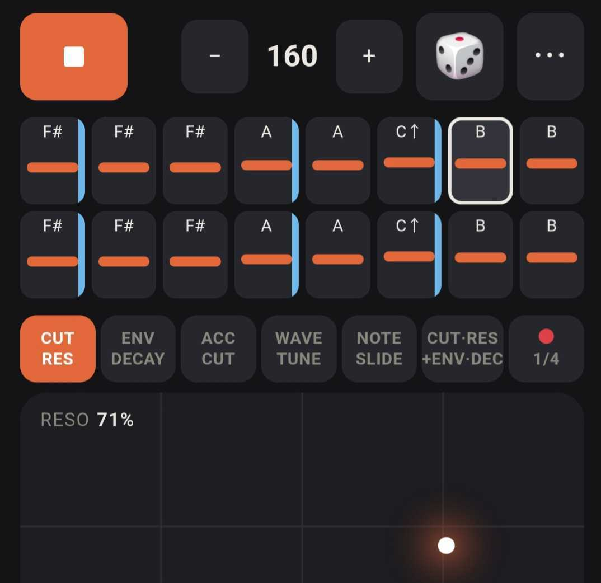
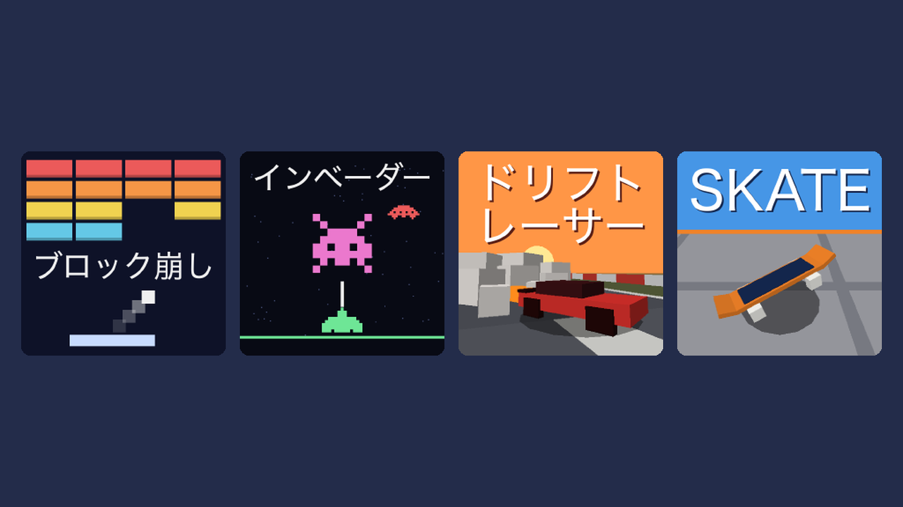
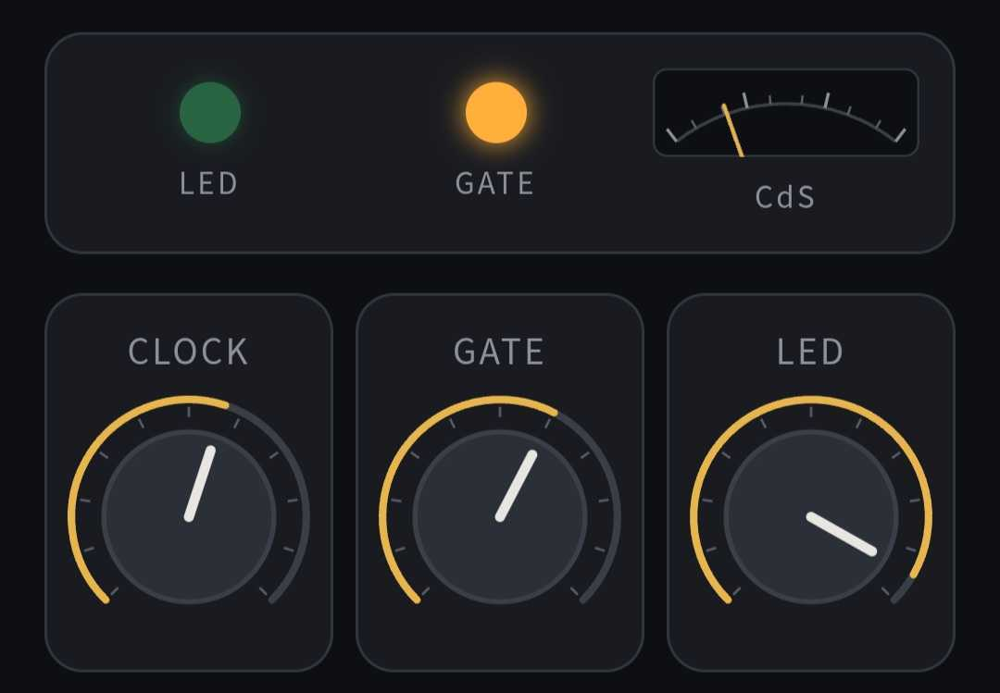

Made for Fun
ブラウザゲームなど、個人で制作したものを公開しています。
Mini Gamesブラウザですぐ遊べる自作ミニゲーム集

インストール不要、開いてすぐ遊べます。
ゲームパッド対応。
Web Synthブラウザで動くシンセサイザー

Unity GamesこれまでにUnityで作ったゲーム
Updates更新履歴
- 更新
更新履歴を追加しました
- 公開
Vactrol Synth を公開しました
- 更新
Cookie 使用ダイアログを追加しました